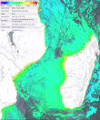

| Title | Quicklook | Description | Place | Time Period of Content | Download |
|---|---|---|---|---|---|
| Water quality for large geographical regions |
 (635kB) |
Example of a Chl-a map for the Western Indian Ocean | Mozambique Madagascar |
June 04, 2020 | Example in GIS portal User Guide |
| SAR detected shoreline - Beira, Mozambique (2019) |
 (1.3MB) |
Ratio of average is a local method used to detect edges within a 9x9 kernel (a small subset of data) within the median filtered SAR image.This delineates linear features, kept here in raster format. Sentinel images were preprocessed via SNAP which included the following. Calibration, Speckle filtering, Terrain correction and masking between land and water. This dataset is in the early stages of development and is unvalidated. Semi-automatic shoreline detection produced from a median of 31 Sentinel-1 SAR images from 2019. |
Mozambique | 20190101 - 20191230 |
Beira map (PDF, 3.4MB) GIS data (TIF, 460MB) Metadata (XML, 9KB) |
| Median SAR image Inhaca-ponta, Mozambique |
 (7.0MB) |
TBD | Mozambique | TBD | Inhaca-ponta Map (PDF, 6.1MB) GeoTIFF/GIS data (505.4MB) |
| Shoreline Inhaca-ponta, Mozambique |  |
TBD | Mozambique | Shoreline maps with estimated locations for high and low water lines. | GeoTIFF/GIS data (505.4MB) |
| Median SAR image Inhambane, Mozambique |
 (5.7MB) |
TBD | Mozambique | TBD | GeoTIFF/GIS data (486.0MB) |
| Shoreline Inhambane, Mozambique |
 (5.4MB) |
TBD | Mozambique | TBD | GeoTIFF/GIS data (486.0MB) |